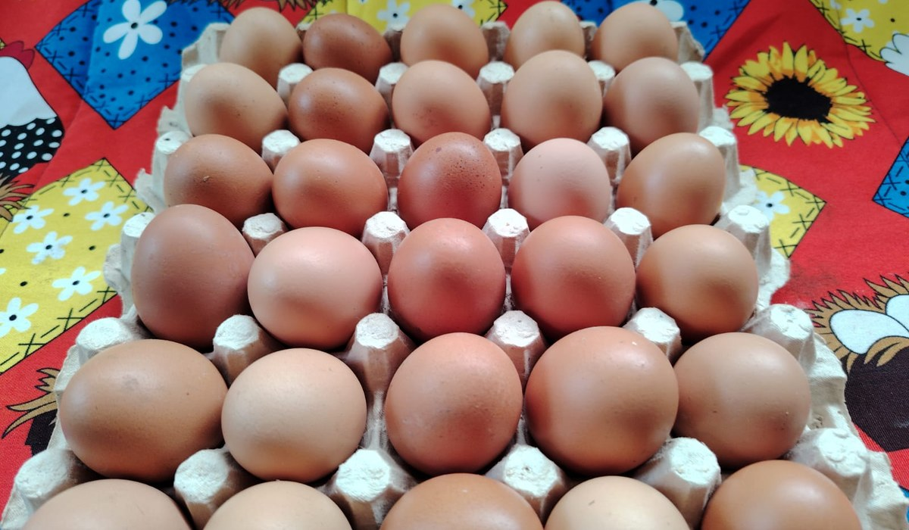
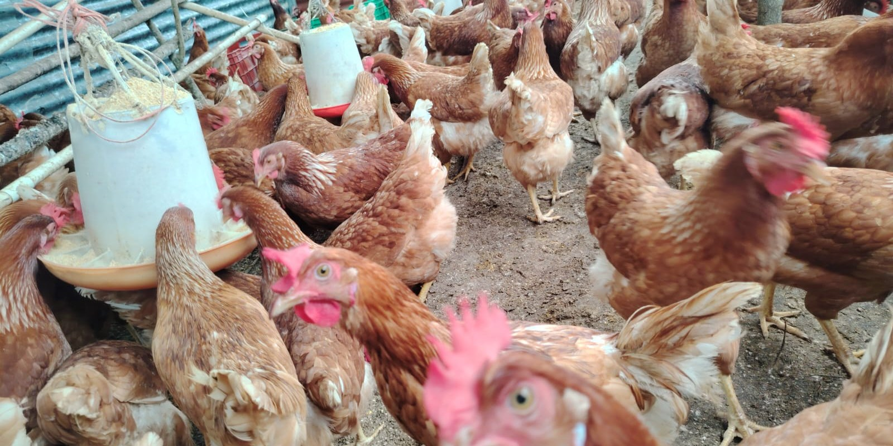
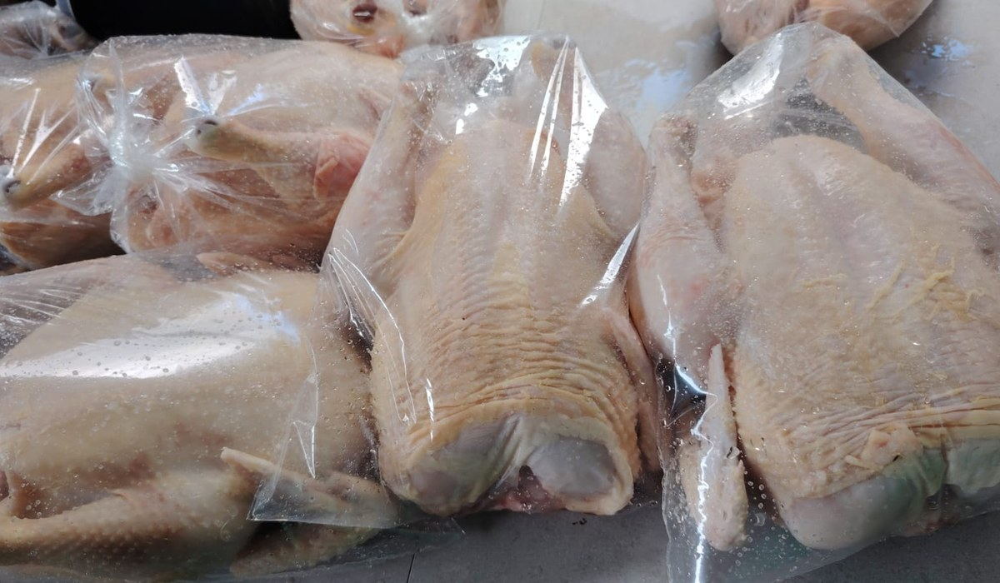

Huevos
Huevo café fresco, en presentaciones de 30, 15, 6 y 4 unidades, para consumo en casa o para negocios.

«Lo mejor, con amor, siempre Morán.»
Somos Avícola La Morán, un negocio familiar de La Vega, en el distrito de Florencia de San Carlos. Nacimos el 20 de julio de 2023 y llevamos el apellido del abuelo de la familia. Lo que empezó como un proyecto pequeño fue creciendo día con día, gracias al apoyo de todas las personas que creyeron en la iniciativa.
Hoy criamos 500 pollos para carne y 100 gallinas ponedoras, y con eso abastecemos de huevo fresco y pollo a clientes y comercios de la zona. Trabajamos de forma directa con quien nos compra: sin intermediarios, atendiendo cada pedido y encargo de manera personal.

Huevo café fresco, en presentaciones de 30, 15, 6 y 4 unidades, para consumo en casa o para negocios.

Pollo entero fresco. Los cortes por pieza —pechuga, muslo y alas— estarán disponibles próximamente.